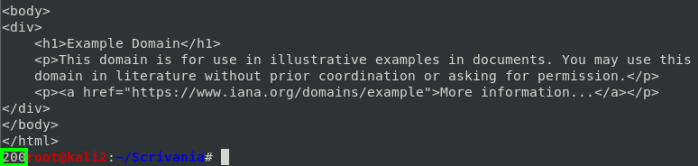
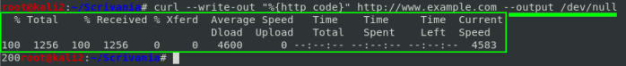
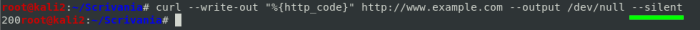
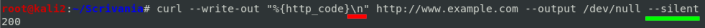
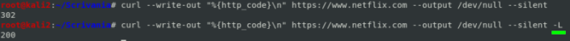
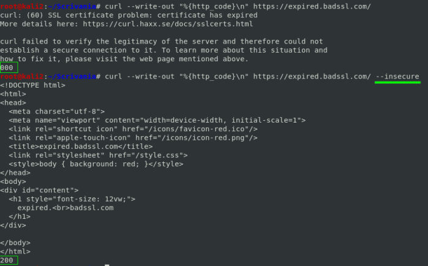

curl
curl is used to transfer data from or to a server, using one of the protocols:
HTTP, HTTPS, FTP, FTPS, SCP, SFTP, TFTP, DICT, TELNET, LDAP or FILE. (To transfer multiple files use wget or FTP
)
OPTIONS:
-w or
--write-out: return a formatted
output of the variable chosen
• To know the
http response code
curl --write-out "%{http_code}" http://www.example.com/
-o
<file> or
--output <file>: output to file instead of stdout
• discard
output by sending it to /dev/null
curl --write-out "%{http_code}" http://www.example.com --output /dev/null
-s or
--silent: silent or quiet mode. Don't show progress meter or error messages
curl --write-out "%{http_code}\n" http://www.example.com --output /dev/null --silent

curl --write-out "%{http_code}\n" http://www.example.com --output /dev/null --silent
-L or
--location: follow the redirection(location)
curl --write-out "%{http_code}\n" https://www.netflix.com --output /dev/null --silent -L
-k or
--insecure: skip certificate validation (the transfer data on https is still sent encrypted)
